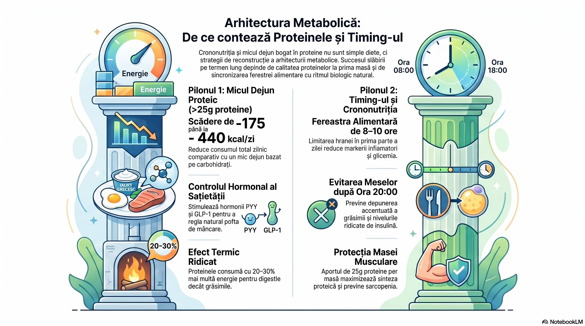
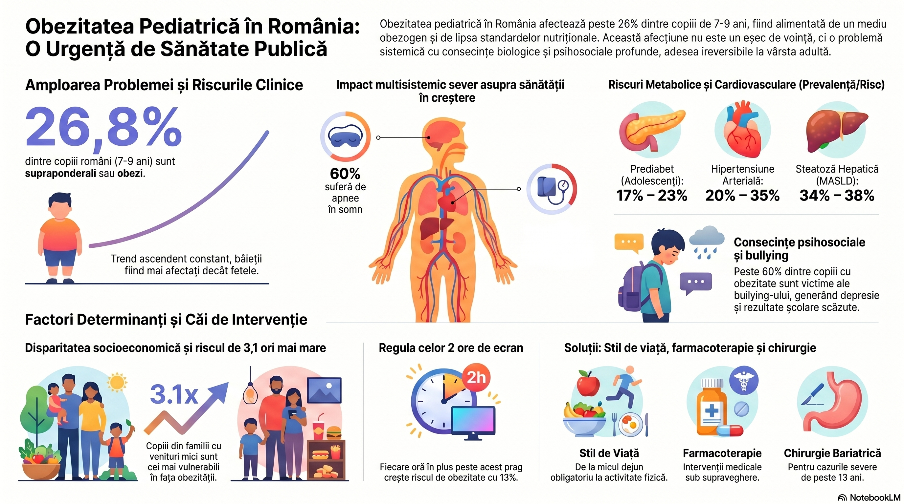

Obezitatea
O boală cronică, sistemică, multifactorială — de la fiziopatologie la soluții dovedite
Rezumat
↑ Sus
Obezitatea este o tulburare cronică, multifactorială şi recidivantă, definită printr-un IMC ≥ 30 kg/m². Începând cu ianuarie 2025, Comisia Lancet Diabetes & Endocrinology a redefinit-o: obezitate preclinică (risc variabil, fără disfuncție de organ) vs. obezitate clinică (boală cronică sistemică cu afectare de organ sau limitare funcțională). Tratamentul modern combină modificări de stil de viață, farmacoterapie (inclusiv agonişti GLP-1/GIP) şi chirurgie bariatrică.
1. Etiologia obezității
↑ Sus
Obezitatea rezultă dintr-un dezechilibru energetic cronic — aport > consum —, dar această ecuație simplă ascunde o realitate biologică extrem de complexă. Cauzele sunt simultan genetice, epigenetice, endocrine, microbiomice, comportamentale şi de mediu. Nu există o singură cauză, nu există o singură soluție.
Factori genetici şi epigenetici
Heritabilitatea IMC variază între 40 şi 60% — nu este nici destin, nici scuză, ci un fond de risc. Cu rare excepții, obezitatea nu urmează un tipar mendelian, ci o interacțiune complexă de loci multipli. Gena ob codifică leptina, hormonul-cheie care semnalizează creierului cantitatea de grăsime stocată. Defectele în căile leptino-melanocortinice (ex. receptorul MC4R) sunt asociate cu pierderea controlului apetitului.
Factorii de mediu — nutriție, tiparele de somn, alcool — reprogramează expresia genetică prin epigenetică. Aceasta deschide o poartă pentru terapii țintă: modificarea stilului de viață poate inversa parțial amprentele epigenetice nocive.
Mecanisme cheie de reglare a apetitului
- GLP-1, CCK, PYY (hormoni gastrointestinali) — reduc aportul alimentar; Ghrelina (stomac) — creşte senzația de foame
- Leptina (din adipocite) — codifică creierului nivelul de depozite adipoase; în obezitate apare rezistență la leptină, analogic rezistenței la insulină
- Hipotalamusul integrează semnalele şi activează NPY, AgRP (cresc foamea) vs. CRH, CART (scad foamea)
- Sistemul limbic mediază alimentația hedonistă — poftă, obicei, recompensă — mediate dopaminergic; emoția şi stresul pot suprascrie orice semnal homeostatic
Factori de stil de viață şi comportamentali
Determinanții aportului alimentar nu sunt doar foamea, ci şi: dimensiunea porției, densitatea energetică a alimentelor, accesibilitatea şi prețul. Comunitățile cu acces limitat la alimente proaspete şi consum ridicat de băuturi răcoritoare au rate semnificativ mai mari de obezitate. Alimentele ultra-procesate, dietele hiperglicemice şi consumul de alcool favorizează pozitiv balanța energetică.
Factori de reglare şi de mediu
Programarea metabolică în perinatal este subestimată:
- Obezitatea maternă, fumatul în sarcină şi creşterea ponderală excesivă gestațională perturbă reglarea greutății începând din prima zi de viață
- Obezogenii (bisfenol A, ftalați, PCB, pesticide) reprogramează punctele metabolice de echilibru prin epigenetică
- Microbiomul intestinal: utilizarea precoce a antibioticelor alterează compoziția microbiomului şi creşte riscul de obezitate ulterioară
- Somnul insuficient (< 7h/noapte) creşte ghrelina şi scade leptina — IMC a crescut cu 3,6% când durata medie de somn a scăzut de la 8h la 5h (Wisconsin Sleep Cohort)
- Evenimentele adverse din copilărie cresc riscul de obezitate severă: abuzul verbal frecvent a crescut riscul de IMC > 40 cu 88%
- Medicamente care provoacă creştere în greutate: glucocorticoizi, triciclice, IMAO, acid valproic, risperidonă

Tulburări de alimentație asociate obezității
Tulburarea de alimentație compulsivă (binge eating disorder): consum rapid de cantități mari, cu sentiment de pierdere a controlului şi suferință ulterioară. Prevalănță mondială: ~1,5% femei, 0,3% bărbați. Obezitatea este de regulă severă şi instabilă ponderal.
Sindromul de alimentație nocturnă: anorexie matinală + hiperfagie vesperălă + insomnie cu episoade alimentare nocturne (> 25–50% din aportul zilnic după cină). Aproximativ 10% din persoanele cu obezitate severă care solicită tratament prezintă acest sindrom.
2. Complicațiile obezității
↑ Sus
Țesutul adipos nu este inert — este un organ endocrin activ care secretă adipokine, acizi graşi liberi şi citokine proinflamatorii. Inflația cronică de grad scăzut generată de obezitate afectează practic orice sistem de organe.
| Sistem | Complicații principale |
|---|---|
| Cardiovascular | Hipertensiune arterială, boală coronariană, AVC, tromboembolism venos |
| Pulmonar | Apnee obstructivă în somn (AOS), sindrom Pickwick |
| Endocrin | Diabet zaharat tip 2, rezistență la insulină, hipotiroidism, SOPC, hipogonadism |
| Musculoscheletal | Osteoartrită (mecanică + adipokină-mediată) |
| Gastrointestinal | Reflux gastroesofagian, colelitiază, steatohepatită (MASLD) |
| Oncologic | Cancere asociate obezității: sân, colon, endometru, rinichi, esofag |
| Psihosocial | Depresie, stres psihologic, discriminare, stimă de sine scăzută |
Mecanismele cardiovasculare sunt mai complexe decât simpla suprasarcină: adipocitele viscerale eliberează leptină şi angiotensină direct, activând sistemul RAA şi crescând rezistența vasculară. Hiperinsulinemia compensatorie stimulează sistemul nervos simpatic — vasoconstrictor. AOS generează hipoxie intermitentă care amplifică riscul hipertensiv şi coronarian.
3. Diagnosticul obezității — Cadrul 2025
↑ SusDefinirea obezității exclusiv prin IMC a fost întotdeauna o simplificare utilă epidemiologic, dar insuficientă clinic. Începând cu ianuarie 2025, Comisia Lancet Diabetes & Endocrinology recomandă o abordare în două etape:
Clasificarea IMC — screening inițial
IMC = greutate (kg) / înălțime² (m):
- 25,0 – 29,9 kg/m² — Supraponderal
- 30,0 – 34,9 kg/m² — Obezitate Clasa I
- 35,0 – 39,9 kg/m² — Obezitate Clasa II
- ≥ 40,0 kg/m² — Obezitate Clasa III (severă)

Clasificarea clinică (Lancet 2025)
Obezitate preclinică: exces adipos cu risc variabil, fără disfuncție de organ documentată. Necesită monitorizare, consiliere şi prevenție activă.
Obezitate clinică: boală cronică sistemică, cu disfuncție documentată de organ/țesut şi/sau limitare a activităților cotidiene. Necesită tratament medical activ.
Analiza compoziției corporale
- Măsurarea plicilor cutanate (triceps) — accesibilă, operator-dependentă
- BIA (analiză bioelectroimpedantă) — neinvazivă, accesibilă; atenție la statusul de hidratare
- Cântărire hidrostatică — gold standard, rară în practică clinică
- DXA, CT, RMN — precizie maximă, utilizate predominant în cercetare
Screening de comorbiditați
Orice pacient cu obezitate trebuie evaluat pentru: apnee obstructivă în somn (chestionar STOP-BANG), diabet zaharat, dislipidemie, hipertensiune arterială, boală hepatică steatotică (MASLD) şi depresie. AOS este frecvent subdiagnosticată — obezitatea dublează sau triplează riscul.
4. Tratamentul obezității — Strategii dovedite
↑ SusO pierdere în greutate de numai 5–10% aduce beneficii măsurabile: reduce riscul cardiovascular, ameliorează rezistența la insulină, îmbunătățeşte profilul lipidic, atenuează AOS, MASLD, infertilitatea şi depresia. Nu există un prag minim de greutate pierdută sub care beneficiul să fie neglijabil.
Obezitatea trebuie abordată ca boală cronică, nu ca eşec de voință. Limbajul centrat pe persoană („persoană cu obezitate”, nu „obez”) reduce stigmatizarea şi creşte aderanța la tratament.
4.1 Managementul dietetic extins
↑ Sus
Nutriția terapeutică în obezitate nu înseamnă restricție cu orice preț. Înseamnă reconstrucția arhitecturii metabolice prin calitate, timing şi context alimentar. Principiile validate de ghidurile europene (EASO 2023) şi metaanalizele recente:
Strategii calitative dovedite
- Dieta mediteraneană extinsă (MedDiet): reducția risc cardiovascular 25–30%, reducere ponderală comparabilă dietei hipocalorice standard la 12 luni (Lyon Diet Heart Study, actualizare 2022)
- Dieta DASH (Dietary Approaches to Stop Hypertension): eficientă în obezitate cu HTA concomitentă; reduce TA sistolică cu 8–11 mmHg
- Dieta săracă în index glicemic (low-GI): ameliorează rezistența la insulină, reduce poftele glucidice, susține saturația prin semnalizare hormonă GLP-1 optimizată
- Post intermitent 16:8 sau 5:2: eficacitate similară restricției calorice continue la 12 luni, dar cu aderare superioară pe termen mediu la anumite profiluri (NEJM 2019). Atenție: contraindicat la sarcină, diabet tip 1, istoricul de tulburări alimentare
- Dieta cetogenă (< 50g carbohidrați/zi): eficace pe termen scurt (6–12 luni), efecte metabolice benefice în DZ2 şi MASLD. Risc: deficit micronutrienți, dislipidemie LDL la unii pacienți, nesustenabilă social pe termen lung
Timing alimentar şi crononutriție
Masa orelor de masă nu este arbitrară — metabolismul are o componentă circadiană documentată:
- Micul dejun proteic (> 25g proteină) reduce consumul total caloric cu 175–440 kcal/zi vs. micul dejun glucidic (Leidy et al., Am J Clin Nutr, 2015)
- Masa de seară după ora 20:00 este asociată cu nivel crescut de insulină a jeun şi depunere adipoasă mai mare la acelaşi aport caloric (Wang et al., Obesity, 2020)
- Time-restricted eating (TRE): fereastra optimă de 8–10h în prima parte a zilei reduce tensiunea arterială, markerii inflamatori şi glicemia a jeun independent de pierderea ponderală
Macronutrienți şi calitate, nu cantitate simplă
Dezbaterea carbohidrați vs. grăsimi este eronată. Ce contează efectiv:
- Proteinele slabe (0,8–1,2g/kg corp/zi, crescut la 1,4–1,6g/kg în procesul activ de slăbire): mențin masa musculară, cresc termogeneza indusă de dietă cu 20–30% vs. grăsimi, augmentează satietatea prin PYY şi GLP-1
- Fibrele solubile (10–15g/zi în plus: psyllium, inulină, beta-glucan): reduc absorbția glucozei, hrănesc microbiomul, cresc satietatea — metaanaliză Cochrane 2022: −1,3 kg în medie la suplimentare cu fibre
- Grăsimile mono/polinesaturate (omega-3 EPA/DHA, acid oleic): reduc inflația sistemică, ameliorează sensibilitatea la insulină şi profilul lipidic
- Eliminarea ultra-procesatelor (NOVA Clasa 4): consumul crescut este asociat cu creştere ponderală de 0,58 kg/an independent de aportul caloric total (PREDIMED+ 2023)
Greşeli frecvente cu impact negativ documentat
- Dietele foarte restrictive (< 800 kcal/zi) declanşează răspunsuri hormonale compensatorii (leptină ↓, ghrelina ↑) — 1/2 până la 2/3 din pacienți recâştigă mai mult decât au slăbit inițial în 5 ani
- Excluderea completă a unui macronutrient nu este susținută ştiințific pe termen lung şi generează deficite micronutriente predictibile
- Programele „one-size-fits-all” (acelaşi meniu pentru toți): ignoră variabilitatea glicemică individuală (studiu Weizmann 2015: răspunsul glicemic la acelaşi aliment variază dramatic între indivizi)
4.2 Activitatea fizică
Exercițiul fizic creşte consumul energetic, rata metabolică bazală şi termogeneza indusă de dietă. Combinația aerobic + rezistență este superioară oricăreia luate separat. Ghidurile europene (EASO/ESC 2023) recomandă: 150 min/săptămână pentru beneficii de sănătate; 300–360 min/săptămână pentru pierdere şi menținere ponderală.
- Sensibilitate crescută la insulină — efectul persistă 24–48h post-exercițiu
- Creşterea masei musculare → RMB crescut durabil (1 kg muşchi = +13 kcal/zi în repaus)
- Scăderea hs-CRP şi IL-6 (markeri inflamatori) cu 20–35% la antrenament regulat
- Reducerea adipozității viscerale independent de pierderea ponderală totală
4.3 Intervenții comportamentale

- Automonitorizare: jurnal alimentar, cântărire regulată, analiza contextelor de alimentație (ora, locație, stare emoțională)
- Management al stresului: tehnici de relaxare care nu implică mâncatul (mers pe jos, meditație, respirație conştientă)
- Management al stimulilor: eliminarea alimentelor hipercalorice din casă, evitarea traseelor care trec prin zone de fast-food
- Suport social: grupuri de sprijin, familia, aplicații mobile — frecvența participării la întâlniri de grup se corelează direct cu pierderea în greutate
- Recompense contingente: recompensarea comportamentelor pozitive, de către clinician sau auto-administrate
4.4 Nutraceutice şi suplimentare ştiințifică — Rolul specialistului
↑ Sus
⚠ AVERTISMENT CRITIC: Suplimentarea în obezitate nu este un act de comerț. Este un act terapeutic. Pacientul cu obezitate are deficite micronutriențe predictibile, interacțiuni medicamentoase reale şi variabilități biologice individuale care fac orice protocol „după ureche” ineficient sau nociv. Nu are nevoie de „vânzători de cutii” cu promisiuni magice. Are nevoie de un specialist în suplimentare ştiințifică care lucrează cu date, nu cu marketing.
Persoanele cu obezitate au un profil micronutriențional specific, documentat în literatură:
- Vitamina D: deficitul apare la 60–80% din persoanele obeze (Earthman et al., Obes Rev, 2012) — vitamina D se sechestrază în țesutul adipos; dozele standard de 1.000–2.000 UI/zi sunt insuficiente — necesită dozare serică (25-OH-D) şi protocol individualizat
- Magneziu: deficitul funcțional (magneziul seric poate fi normal cu deficit intracelular real) este prezent la 60–75% din pacienții cu rezistență la insulină; magneziul este cofactor în > 300 reacții enzimatice inclusiv metabolismul glucozei. Forma contează: bisglicinat, malat sau treonat — nu oxid
- Omega-3 (EPA+DHA): antiinflamator sistemic documentat, reduce TG cu 20–30% la 3g/zi, ameliorează rezistența la insulină şi reduce VLDL. Doza terapeutică: 2–4g/zi EPA+DHA — nu cantitatea de capsule, ci gradul de puritate şi concentrația efectivă
- Zinc: deficitul este prevalent în obezitate; zincul este cofactor al leptinei şi insulinei — suplimentarea 15–25mg/zi ameliorează profilul adipokinelor şi sensibilitatea la insulină (Ranasinghe et al., Diabetol Metab Syndr, 2015)
- Vitamina B12 şi folat activ (5-MTHF): esențiale în metilare şi metabolism energetic; deficitul B12 este frecvent la pacienții sub metformin (medicament standard în prediabet/DZ2)
- Fier şi feritină: deficitul funcțional de fier (feritina < 30 ng/mL, chiar cu hemoglobină normală) generează oboseală cronică, reducerea performanței cognitive şi scăderea funcției tiroidiene
- Coenzima Q10: sinteza endogenă scade odată cu vârsta şi este inhibată de statine (frecvente în obezitate); CoQ10 100–300mg/zi ameliorează funcția mitocondrială şi reduce oboseala
Nutraceutice cu eficacitate documentată în managementul greutății
| Nutraceutic | Mecanism | Doză / notă clinică |
|---|---|---|
| Berberină 500mg × 2/zi | Activare AMPK similar metformin; reduce glicemia şi TG | Nu se combină cu metformin fără monitorizare |
| Crom picolinat 200–400 μg | Potențează semnalizarea insulinică; reduce poftele glucidice | Efect modest, util ca adjuvant |
| Alpha-Lipoic Acid (ALA) 600mg | Antioxidant mitocondrial; creşte sensibilitatea la insulină | R-ALA = forma activă; nu racemic |
| Quercentină 500–1000mg | Antiinflamatoare; inhibă adipogeneza; senolitic | Biodisponibilitate scăzută — preferată forma fitozomală |
| Berberină + Silimarină | Protecție hepatică în MASLD + reglare metabolică | Combinație sinergică documentată în studii pilot |
| Probiotic multi-tulpini (10&sup9; CFU) | Modifică microbiomul spre profil anti-obezogen | Indicații după anamne ză: după antibiotice, balonare, IBS |
| Ashwagandha KSM-66 300mg × 2 | Adaptogen: reduce cortizolul cu 14–28%; ameliorează somnul | Util în obezitate cortizol-dependentă |
| Psyllium husk 5–10g/zi | Fibră solubilă: reduce IGP, creşte satietatea, hrăneşte microbiomul | Se ia înainte de masă cu apă suficientă |
PRINCIPIUL CARDINAL: Suplimentarea eficientă porneşte de la date — analize biochimice, BIA, evaluare clinică — nu de la raft. O clasă de supliment utilă la un pacient poate fi irelevantă sau chiar contraproductivă la altul. Forma chimică, doza, timing-ul şi interacțiunile cu medicamentele sunt variabile critice pe care un specialist în suplimentare le evaluează sistematic. Suplimentele „one-size-fits-all” din farmacii sau din reclamele online reprezintă cel mai adesea marketing — nu medicină.
4.5 Farmacoterapia antiobezitatoare
↑ SusIndicată la IMC ≥ 30 kg/m² sau ≥ 27 kg/m² cu comorbiditați, în combinație cu modificarea stilului de viață. Întreruperea oricărui medicament antiobezitatoare determină de regulă recâştigarea greutății — de aceea tratamentul este pe termen lung, similar antihipertensivelor sau statinelor.
Clasele principale
Orlistat: inhibitor de lipază pancreatică. Reduce absorbția intestinală a grăsimilor cu ~30%. Nu se absoarbe sistemic. Efecte adverse: flatulență, scaune grase, diaree (se ameliorează în primul an). Contraindicat la sarcină, sindrom de malabsorbție, colestază.
Fentermină/topirat: supresor de apetit central-activ. Contraindicat în HTA necontrolată, boli CV, hipertiroidism, glaucom, sarcină (risc teratogen major — testare lunară obligatorie). Necesită monitorizare frecvență cardiacă şi tensiune arterială.
Naltrexonă/bupropionă ER: blochează feedback-ul negativ pe căile de satietate. Contraindicat: hipertensiune necontrolată, risc de convulsii, sevraj activ (alcool/benzodiazepine), utilizare concurentă IMAO. Necesită monitorizare TA; nu se foloseşte în bulimie nervoasă.
Generația nouă: Agoniştii incretinici
Semaglutidă 2,4 mg sc/săpt (agonist GLP-1): standard actual în farmacoterapia obezității. Studiul STEP-1 (NEJM, 2021): −14,9% greutate corporală la 68 săptămâni vs. 2,4% placebo. Îmbunătățeşte concomitent HbA1c, HTA, dislipidemie. Contraindicat: antecedente cancer tiroidian medular, NEM tip 2, sarcină. Risc: pancreatită acută, gastropareză, tulburări gastrointestinale (greață în titrație).
Tirzepatidă (dual agonist GIP+GLP-1): a demonstrat superioritate față de semaglutidă în metaanalize directe (7 studii, 28.980 participanți, 2025): −7,0% vs. −3,4% în 6 luni în populația non-diabetică. Studiile SURMOUNT: reduceri ponderale 20–22,5% la doza maximă (15 mg). Aprobat FDA 2023. Profil de risc similar semaglutidei. Contraindicat: cancer tiroidian medular, NEM2, pancreatită cronică.
⚠ Contraindicații comune farmacoterapiei antiobezitatoare
- Sarcină şi alăptare (toate clasele — contraindicat absolut)
- Tulburări de alimentație active (anorexie nervoasă, bulimie) — risc de agravare
- Boală renală cronică severă (ajustare doze sau contraindicat pentru mai multe clase)
- Utilizare concomitentă de medicamente cu interacțiuni semnificative (IMAO + bupropion, anticoagulante + unele molecule)
- Vârstă sub 18 ani — majoritatea medicamentelor nu au aprobare pediatrică (excepție: orlistat ≥ 12 ani în anumite ghiduri, semaglutidă ≥ 12 ani din 2023 în SUA)
Ce se întâmplă la oprirea tratamentului
Oprirea farmacoterapiei antiobezitatoare — în special a agoniştilor GLP-1/GIP — este urmată predictibil de recâştigarea greutății. Datele STEP-4 (semaglutidă) şi SURMOUNT-4 (tirzepatidă) confirmă: la 1 an după oprire, pacienții recâştigă în medie 50–60% din greutatea pierdută. Acest comportament confirmă natura cronică a bolii — nu un eşec al pacientului. Decizia de întrerupere necesită planificare activă: consolidarea intervențiilor comportamentale şi nutriționale înainte de oprire, nu după.
4.6 Chirurgia bariatrică (metabolică)
↑ Sus
Cea mai eficientă intervenție pe termen lung pentru obezitatea severă. Indicată la IMC ≥ 40 kg/m² sau ≥ 35 kg/m² cu comorbiditați semnificative, după eşecul tratamentului conservator (≥ 6 luni).
- Bypass gastric Roux-en-Y (RYGB) — eficacitate maximă pe termen lung; remisie DZ2 până la 80%; pierdere ponderală medie 25–35% din greutatea inițială
- Gastrectomie longitudinală (sleeve gastrectomy) — cea mai răspândită; pierdere ponderală 20–25%; risc mai redus de malabsorbție
- Banding gastric ajustabil — eficacitate mai scăzută, rată mare de reintervenții; mai rar utilizat în prezent
⚠ Contraindicații chirurgie bariatrică
- Tulburări psihiatrice necontrolate (schizofrenie activă, tulburare bipolară netratată, depresie severă netratată)
- Dependențe active de alcool sau substanțe (risc de transfer de adicție post-operator)
- Bolile cardiopulmonare severe care contraindică anestezia generală
- Aderarea scăzută predictibilă la modificarea dietei post-operator (evaluare psihologică obligatorie preoperatorie)
- Boli autoimune sau inflamatorii sistemice necontrolate
- Sarcină — contraindicat absolut; se recomandă contracepție 12–18 luni post-operator
Managementul post-operator şi riscul de recâştigare
Chirurgia bariatrică nu este un eveniment, ci un punct de start. Datele pe 10 ani (Nature Int J Obesity, 2026) arată că 15–20% din pacienți recâştigă semnificativ în greutate la 5–10 ani, în special în prezența:
- Revenirii la comportamentele alimentare preoperatorii (snacking continuu, grazing)
- Tulburărilor psihologice netratate preoperator (depresie, alimentație emoțională)
- Lipsei exercițiului fizic şi a urmăririi nutriționale pe termen lung
- Deficitelor micronutriente post-operator (fier, B12, vitamina D, calciu) care reduc calitatea vieții şi motivația
Monitorizarea biochimică post-operator este obligatorie: panel metabolic complet la 3, 6, 12 luni, apoi anual pe viață. Suplimentarea de bază post-chirurgie bariatrică include obligatoriu: complex multivitaminic specific bariatric, calciu citrat (nu carbonat), vitamina D3 2000–5000 UI, B12 sublingual sau intramuscular, fier elemental monitorizat.
Concluzie practică: Chirurgia bariatrică este cel mai eficient instrument disponibil pentru obezitatea severă, dar necesită un ecosistem de suport — psihologic, nutrițional şi medical — pe termen indefinit. Fără acesta, rezultatele se degradează predictibil.
5. Populații speciale
↑ Sus5.1 Copii şi adolescenți — O criză de sănătate publică în Europa şi România
↑ Sus
Obezitatea pediatrică reprezintă una din cele mai grave emergențe de sănătate publică ale secolului XXI. Spre deosebire de obezitatea adultă, ea condensează consecințele biologice pe o durată mult mai lungă şi generează modificări structurale cu reversibilitate scăzută la vârsta adultă.
Date epidemiologice — Europa şi România
Sistemul european de supraveghere COSI (Childhood Obesity Surveillance Initiative), coordonat de OMS/Europa, oferă cele mai recente date comparabile:
- UE — COSI Round 5 (2019–2020, 35 țări, 252.000 copii): 1 din 3 copii cu vârsta 7–9 ani are supraponderal sau obezitate; rata obezității variază de la 6% (Letonia) la 24% (Cipru). Regiunile mediteraneene şi cele cu venituri mai scăzute prezintă rate semnificativ mai mari
- România — COSI 2019: 26,8% din copiii 7–9 ani prezintă supraponderal sau obezitate (față de 23,1% în 2016) — trend ascendent constant; datele INSP 2023 confirmă menținerea trendului cu uşoare variații regionale (rate mai mari în mediul urban mare şi în sudul țării)
- Adolescenți (13–17 ani) — Eurostat 2022: 15–18% din adolescenții români sunt supraponderali sau obezi; datele sunt probabil subestimate prin auto-raportare
- Disparități de gen: băieții prezintă rate de obezitate pediatrică mai mari decât fetele în toate țările europene raportoare (COSI 2020)
- Disparități socioeconomice: familiile din quintila inferioară de venituri au copii obezi cu o rată de 2,3–3,1 ori mai mare decât familiile din quintila superioară (Eurostat SILC 2023)
Mecanisme specifice — de ce obezitatea pediatrică este diferită
Sistemul biologic al copilului în creştere are vulnerabilități distincte:
- Programarea metabolică devreme: adipozitatea crescută în prima mie de zile de viață (concept „1000 days”) setează setpoint-ul ponderal pe termen lung prin mecanisme epigenetice; intervenția ulterioară trebuie să „re-programeze” un sistem deja calibrat greşit
- Insulinorezistența apare mai precoce: DZ2 la copii era rară înainte de 1990; în prezent, 17–23% din adolescenții obezi din Europa prezintă prediabet (HbA1c 5,7–6,4% sau glicemie în repaus 100–125 mg/dL)
- Sistemul cardiovascular imatur: hipertensiunea arterială la copiii obezi este prezentă în 20–35% din cazuri (ghiduri ESC Pediatric 2022); grosimea intimei carotidiene, marker precoce al aterosclerozei, este semnificativ crescută
- Steatoza hepatică (MASLD) pediatrică: prezentă la 34–38% din copiii obezi (metaanaliză Nobili et al., 2019); în România este subdiagnosticată sistematic — nicio ecografie hepatică de rutină la copiii obezi nu este inclusă în pachetul de bază CNAS
- Apneea obstructivă în somn: prezentă la 33–60% din copiii cu obezitate severă; impactează direct performanța şcolară, comportamentul şi funcția cognitivă — este frecvent confundată cu „ADHD” sau „lenețe”
- Specificitate pediatrică: epifizioliză femurală capitală (dezlipirea capului femural sub greutatea excesivă) — urgență ortopedică diagnosticată la copiii cu obezitate Clasa II–III; boala Blount (tibie vara osteocondrozică) — diformitate progresivă a gambei
Consecințe psihologice şi sociale — dimensiunea neglijată
Stigma ponderală în mediul şcolar are consecințe documentate clinic:
- Copiii obezi sunt victimele bullying-ului în 63–65% din cazuri (studiu HBSC – Health Behaviour in School-aged Children, OMS/Europa, 2022); rata este mai mare decât la orice alt grup vulnerabil studiat
- Stima de sine scăzută şi depresia sunt prezente la 26–41% din copiii şi adolescenții obezi; riscul de anxietate este de 2–3 ori mai mare vs. copiii normoponderali
- Izolarea socială şi evitarea activității fizice formează un cerc vicios care amplifică obezitatea: copilul obez evită ora de sport (stigmă), sedentarismul creşte, obezitatea progresează
- Randamentul şcolar scăzut: studii recente (ECOG/JRC 2022) arată că obezitatea severă la copii este asociată cu performanțe cognitive măsurate semnificativ sub medie, parțial mediate prin AOS şi depresie
Factori specifici României
Contextul național amplifică riscul prin caracteristici structurale:
- Alimentația în unitățile de învățământ: controale ANSVSA 2022–2023 au documentat predominanța alimentelor ultra-procesate în bufetele şcolare; lipsa standardelor nutriționale naționale cu aplicare reală permite vânzarea de snack-uri cu densitate energetică maximă la prețuri accesibile
- Sedentarismul structural: 1–2 ore de educație fizică/săptămână în şcoala românească, din care o parte semnificativă nu implică activitate fizică reală; infrastructura de sport şcolar este sub standardele europene în > 60% din şcolile rurale
- Consumul de băuturi zaharoase: România are unul din cele mai mari consumuri per cap de băuturi zaharoase din UE (Euromonitor 2023); taxa pe băuturile zaharoase, implementată parțial în alte țări UE, nu există în România
- Accesul la specialist pediatric de obezitate: sub 20 de centre specializate la nivel național raportează date INSP 2023; medicul de familie are instrumente limitate şi timp insuficient pentru managementul obezității pediatrice
Intervenții validate — de la dovezi la practică
Ghidurile ESPGHAN (European Society for Paediatric Gastroenterology, Hepatology and Nutrition) 2023 şi ghidurile ECOG recomandă:
- Prioritate absolută: modificarea stilului de viață la nivelul întregii familii — intervenția individuală pe copil fără schimbarea mediului familial are eficacitate neglijabilă pe termen lung
- Limitarea timpului de ecran la maxim 2h/zi (sub 5 ani: 0h); fiecare oră de ecran suplimentară creşte riscul de obezitate cu 13% (metaanaliză Cheng et al., Int J Environ Res 2020)
- Micul dejun zilnic: copiii care sar micul dejun au IMC semnificativ mai mare (metaanaliză Szajewska, JPGN 2022) şi performanță cognitivă scăzută dimineața
- Farmacoterapie pediatrică: Orlistat aprobat ≥ 12 ani; Semaglutidă aprobată FDA ≥ 12 ani din 2023 (studii STEP TEENS: −16,1% greutate la 68 săptămâni vs. −0,6% placebo). Indispensabil: context de echipă multidisciplinară, nu prescripție izolată
- Chirurgie bariatrică pediatrică: recomandată de ghidurile EASO/AAP 2022 la adolescenți ≥ 13–14 ani cu IMC ≥ 40 sau IMC > 35 cu comorbiditați severe, după eşecul tratamentului conservator ≥ 6 luni; obține rezultate ponderale superioare oricărei alternative şi remisie metabolică documentată. Încă rar utilizată în România din cauza lipsei de centre specializate
Obezitatea pediatrică nu este o problemă de voință a copilului sau de responsabilitate exclusivă a părinților. Este rezultatul unui mediu obezogen sistematic, amplificat de vulnerabilități biologice. Răspunsul trebuie să fie sistemic — politic, comunitar şi clinic — nu individual.
5.2 Vârstnici
↑ SusAdipozitatea creşte şi se redistribuie abdominal odată cu vârsta; masa musculară scade (sarcopenie). Circumferința taliei prezice morbiditatea şi mortalitatea mai bine decât IMC la vârstnici. Intervenția: reducere calorică + activitate fizică cu accent pe exerciții de rezistență, echilibru şi anduranță. Vârsta singură nu contraindică chirurgia bariatrică: studii retrospective mari arată că morbiditatea şi mortalitatea chirurgicală nu diferă semnificativ între grupele < 65 şi ≥ 65 ani.
5.3 Femei gravide
↑ SusObezitatea maternă şi creşterea ponderală excesivă în sarcină programează metabolic fătul. Obiectivul nu este pierderea în greutate în sarcină, ci menținerea în limitele recomandate de ghiduri (dependente de IMC pre-sarcină). Monitorizare strânsă a diabetului gestațional, hipertensiunii şi preeclampsiei.
5.4 Femei în perimenopauza şi menopauza — O populație insuficient adresată
↑ Sus
Tranziția la menopauza reprezintă unul din momentele biologice cu cel mai mare risc de debut sau agravare a obezității. Femeile în perimenopauza (45–52 ani) şi menopauza (> 12 luni de amenoree) formează o populație cu o fiziologie complet distinctă, căreia protocoalele standard de obezitate i se aplică suboptimal. Acest segment este subreprezentat în trialurile clinice de obezitate şi tratat frecvent cu sfaturi generice — „este normal la vârsta ta” — care nu adresează niciunul din mecanismele reale.
Epidemiologie şi context european
- Femeile pun în medie 2–5 kg în perimenopauza chiar şi fără modificări ale aportului caloric (SWAN Study – Study of Women's Health Across the Nation, 2021)
- Riscul de a dezvolta sindromul metabolic creşte cu 60% în primii 5 ani post-menopauza comparativ cu premenopauza (ESC Women CV Risk Report 2023)
- 40–45% din femeile europene 50–65 ani au obezitate (date Eurostat Health Survey 2022); în România, prevalența este printre cele mai ridicate din UE — INSP 2023 estimează 39,2% obezitate la femei 45–64 ani
- Rata de adresare la specialist pentru managementul ponderal la femeile în menopauza este semnificativ mai scăzută decât la bărbați de vârstă similară — factor cultural, normalizare socială a îngrăşării post-menopauza
Cascada hormonală — mecanismele de bază
Sistemul hormonal feminin funcționează ca un regulator metabolic major. Pierderea lui generează o reconfigurare sistemică:
- Căderea estradiolului (E2): estrogenul era un sensibilizator insulinic direct la nivel muscular şi hepatic, menținea distribuția adipoasă periferică (gluteofemurală) şi inhiba adipogeneza viscerală. Fără E2, grăsimea se redistribuie activ către visceral (intraabdominal) — acelaşi IMC devine metabolic mai periculos
- Creşterea FSH (hormon foliculostimulant): recent demonstrat (Liu et al., Nature, 2023) că FSH ridicat post-menopauza stimulează direct adipocitele viscerale prin receptori FSH specifici (FSHR) exprimați în țesutul adipos; blocarea FSHR la şoareci a prevenit obezitatea post-ovarectomie — deschide o țintă terapeutică nouă
- Scăderea progesteronului: determină retenție de lichide, creştere relativă a cortizolului (progesteronul era un antagonist natural al receptorilor glucocorticoizi), tulburări de somn (progesteronul are efect anxiolitic şi hipnotic prin receptorii GABA-A)
- Scăderea testosteronului (da, şi la femei): pierderea masei musculare (sarcopenie) se accelerează — RMB scade cu 100–200 kcal/zi fără nicio modificare de aport caloric — acelaşi meniu = surplus caloric relativ de 700–1400 kcal/săptămână
- Rezistența la insulină se agravează independent de creşterea în greutate: insulinorezistența legată de menopauza este o consecință directă a pierderii estrogenului, nu doar o consecință a obezității
Factori amplificatori: somn, stres şi comportament alimentar
- Bufeurile nocturne şi insomnia: 60–65% din femeile în perimenopauza raportează tulburări de somn; somnul fragmentat creşte ghrelina, scade leptina şi activează căile de recompensă alimentară dopaminergică — un circuit perfect pentru alimentația nocturnă compulsivă
- Cortizolul crescut: scăderea progesteronului + somnul de proastă calitate = cortizol cronic crescut — acesta stimulează direct lipogeneza viscerală şi inhibă lipoliza
- Fluctuațiile rapide de estrogen în perimenopauza (nu doar nivelul scăzut, ci variabilitatea) afectează serotonina şi dopamina — generând pofte glucidice intense, comportament alimentar emoțional amplificat, iritabilitate
- Tiroida: hipotiroidismul subclinic şi manifest are o prevalentă mai mare la femei 45–60 ani; scăderea funcției tiroidiene poate mima sau amplifica tabloul clinic al menopauzei — diagnosticul diferențial TSH/fT3/fT4 este obligatoriu
Componenta psihoemoțională — nu este „psihologic”, este biochimie
O eroare frecventă în practica clinică: etichetarea simptomelor psihologice ale menopauzei ca „psihice”, fără a le recunoaşte baza neuroendocrină:
- Depresia perimenopauza: bază biologică documentată — estrogenul potențează căile serotoninergice şi noradrenergice; scăderea sa reduce disponibilitatea serotoninei şi creşte riscul de depresie majoră de 2–3 ori față de premenopauza (SWAN Study). Depresia creşte cortizolul, stimulează alimentația hedonică şi reduce motivația pentru activitate fizică
- Anxietatea şi iritabilitatea: fluctuațiile progesteronului (care acționează pe receptorii GABA-A) generează anxietate şi sensibilitate emoțională crescută; nu este „o problemă de caracter”
- Imaginea corporală şi stigma socială: femeile în menopauza raportează un nivel ridicat de ruşine corporală asociată modificărilor fizice (creşterea abdominală, flăscăirea pielii, redistribuirea adipoasă); această ruşine amplifică izolarea socială şi comportamentele alimentare patologice
Intervenții specifice — protocol diferențiat
- Exercițiul de rezistență devine prioritar față de cardio: masa musculară combare sarcopenia, creşte RMB, ameliorează rezistența la insulină şi sănătatea oasă (prevenire osteoporoză). Recomandare: 2–3 sesiuni/săptămână rezistență + 150 min cardio moderat
- Aportul proteic crescut (1,2–1,6g/kg corp/zi): contracararea sarcopeniei — pierderea musculară este mai rapidă în menopauza; distribuția uniformă a proteinelor (> 25g/masă) maximizează sinteza proteică musculară
- Managementul somnului: tratarea insomniei şi a bufeurilor nocturne (igienă de somn, melatonină CR, eventual adaptogeni) reduce cortizolul şi comportamentul alimentar nocturn
- Suplimentarea specifică menopauza: Vitamina D3 (2000–5000 UI — deficitul este aproape universal), Magneziu bisglicinat (reglare cortizol, somn, emoții), Omega-3 EPA/DHA (antiinflamator, cognitive health), Vitamina K2 (densitate oasă în tandem cu D3), Fitoestrogeni (izoflavone din soia, genisteină 40–80mg/zi) — efecte moderate pe simptome vasomotorii, fără risc oncologic la formele naturale
- Terapia hormonală de substituție (THS): opțiunea cu cel mai mare impact sistemic. Ghidurile EMAS/ESE 2023 susțin inițierea precoce (fereastra de oportunitate < 10 ani de la menopauza) pentru beneficii cardiovasculare, cognitive şi ponderale. THS reduce semnificativ adipozitatea viscerală, rezistența la insulină şi riscul de DZ2 la femei fără contraindicații. Riscul de cancer mamar cu THS estrogen-progesteron a fost supraestimat în studiul WHI (2002) — metaanalize recente cu preparate bioidentice (estradiol transdermic + progesteron micronizat) arată un profil de risc semnificativ mai favorabil
- Markeri de monitorizat: E2, FSH, progesteron, testosteron total/liber, SHBG, TSH/fT3/fT4, HOMA-IR, Vitamina D, hs-CRP, lipidogramă completă, DXA pentru compoziția corporală (nu IMC simplu)
MESAJ CLINIC: Femeile în menopauza cu obezitate nu au „probleme de voință” şi nu „se îngraşă din cauza lor”. Sistemul lor hormonal s-a modificat structural. Au nevoie de un protocol individualizat — hormonal, nutrițional, comportamental şi de suplimentare — nu de „dieta de 1200 kcal” care ignoră complet biologia lor actuală.
6. Prognostic
↑ SusObezitatea netratată tinde să progreseze. Probabilitatea şi severitatea complicațiilor sunt proporționale cu: cantitatea absolută de grăsime, distribuția (abdominală > periferică), durata bolii şi masa musculară absolută. Între 1/3 şi 2/3 dintre cei care pierd în greutate prin dietă restrictivă recâştigă mai mult decât au slăbit inițial în 5 ani.
Farmacoterapia modernă (semaglutidă, tirzepatidă) a schimbat perspectiva: pierderile de 15–22% din greutatea corporală erau până recent posibile doar chirurgical. Cele mai durabile rezultate ponderale sunt obținute prin chirurgie bariatrică, care rămâne standardul de aur pentru obezitatea severă.
7 Biomarkeri de diagnosticare si monitorizare in obezitate
↑ SusEvaluarea biologica completa nu este optionala in obezitate — este punctul de start al oricarei interventii rationale. Fara date, nu exista protocol. Valorile de referinta ale laboratorului nu sunt egale cu valorile optime functionale. Diferenta dintre cele doua poate fi diferenta dintre o interventie eficienta si una inutila.
Principii de interpretare
- Valorile de referinta ≠ valori optime. Intervalele laboratorului reprezinta valorile a 95% din populatia "aparent sanatoasa" — o populatie care include milioane de persoane cu deficit functional nediagnosticat
- Contextul primeaza asupra valorii izolate. O feritina de 80 ng/mL la o femeie obeiza cu hs-CRP crescut poate reflecta inflamatie, nu depozite de fier adecvate
- Panelul complet > testele izolate. HOMA-IR fara insulina a jeun nu poate fi calculat. Fierul fara feritina si TIBC este incomplet
- Intervalele de monitorizare variaza cu severitatea. La debut: 3-6 luni. Dupa stabilizare: 6-12 luni. Post-chirurgie bariatrica: obligatoriu pe viata

Panel metabolic de baza — obligatoriu la IMC ≥ 27
| Marker | Ref. standard | Optim functional | De ce in obezitate | Interval |
|---|---|---|---|---|
| Glicemie a jeun | < 100 mg/dL | < 90 mg/dL | FPG ≥ 100 = prediabet; insulinorezistenta precede DZ2 cu ani | Diagnostic; 3 luni daca alterat; anual |
| HbA1c | < 5,7% | < 5,4% | Media glicemica 3 luni; ≥ 6,5% = DZ2 confirmat | Diagnostic; 3-6 luni sub tratament; anual |
| Insulina a jeun | 2-20 μU/mL | < 8-10 μU/mL | Hiperinsulinemia compensatorie precede DZ2 cu ani — NU apare in pachetul standard CNAS | Diagnostic; 6 luni; anual |
| HOMA-IR | < 2,5 | < 1,5 | Cel mai util marker preclinic al rezistentei la insulina; se calculeaza: (insulina x glicemie) / 405 | Diagnostic; 6 luni; anual |
| Trigliceride | < 150 mg/dL | < 100 mg/dL | TG crescute = rezistenta la insulina + risc CV + MASLD | Diagnostic; 3 luni sub interventie; anual |
| HDL-colesterol | Barbati > 40 | Femei > 50 mg/dL | Barbati > 55 | Femei > 65 mg/dL | HDL scazut in obezitate = risc CV crescut; corelat invers cu insulinorezistenta | Diagnostic; 6 luni; anual |
| LDL-colesterol | < 130 mg/dL (fara risc CV) | < 70-100 mg/dL la risc inalt | Obezitatea creste LDL small-dense (mai aterogen decat LDL standard) | Diagnostic; 6 luni; anual |
| Raport TG/HDL | < 3,0 | < 2,0 | Index surogat al rezistentei la insulina; > 3,5 = rezistenta prezumtiva | Calculat din lipidograma; anual |
| ApoB (Apolipoproteina B) | < 100 mg/dL (risc moderat) | < 70 mg/dL la risc inalt | Numara particulele aterogene reale; mai precis decat LDL in obezitate | Diagnostic; 6 luni sub tratament; anual |
Markeri hepatici si renali
| Marker | Ref. standard | Optim functional | De ce in obezitate | Interval |
|---|---|---|---|---|
| ALT (ALAT) | < 40 U/L (barbati) | < 31 U/L (femei) | < 25 U/L | MASLD prezenta la 30-40% din obezi; ALT crescut = semnal precoce de steatohepatita | Diagnostic; 3-6 luni; anual |
| AST (ASAT) | < 40 U/L | < 25 U/L | Raport AST/ALT > 1 sugereaza fibroza hepatica avansata in MASLD | Diagnostic; 3-6 luni; anual |
| GGT | < 55 U/L (barbati) | < 38 U/L (femei) | < 25 U/L | Marker sensibil de stres hepatic; predictor independent de risc CV | Diagnostic; anual |
| eGFR | ≥ 90 mL/min/1,73m² | ≥ 90 mL/min/1,73m² | eGFR < 60 = BRC stadiu 3; limiteaza optiunile farmacoterapeutice (metformin, GLP-1) | Diagnostic; anual |
| Acid uric | Barbati < 7,0 | Femei < 6,0 mg/dL | < 5,5 mg/dL | Hiperuricemia corelata cu sindrom metabolic, guta, boala renala; sensibil la fructoza | Diagnostic; anual |
Markeri inflamatori
| Marker | Ref. standard | Optim functional | De ce in obezitate | Interval |
|---|---|---|---|---|
| hs-CRP | < 3,0 mg/L | < 1,0 mg/L | Tesutul adipos visceral secreta IL-6 si TNF-alfa; hs-CRP crescut = inflamatie cronica sistemica documentata | Diagnostic; 6 luni sub interventie; anual |
| Fibrinogen | 200-400 mg/dL | < 300 mg/dL | Crescut in obezitate — risc tromboembolism si AVC; corelat cu insulinorezistenta | Diagnostic; anual la risc CV |
| IL-6 | < 7 pg/mL | < 3 pg/mL | Mediator central al inflamatiei cronice din obezitate; stimuleaza CRP si rezistenta la insulina | Diagnostic; semestrial daca crescut |
| VSH | Barbati < 15 | Femei < 20 mm/h | < 10 mm/h | Marker inflamator general; util in screening inflamatie cronica | Diagnostic; anual daca normal |
Markeri hormonali — frecvent omisi in practica curenta
| Marker | Ref. standard | Optim functional | De ce in obezitate | Interval |
|---|---|---|---|---|
| TSH | 0,4-4,0 mIU/L | 1,0-2,5 mIU/L | Hipotiroidismul subclinic (TSH 2,5-10) frecvent la obezi; reduce RMB-ul; mimeaza obezitatea | Diagnostic; anual; 3-6 luni daca alterat |
| fT3 (triiodotironina libera) | 2,3-4,2 pg/mL | 3,0-4,0 pg/mL | Hormonul tiroidian activ — controleaza RMB real; nu apare in testul standard TSH | Diagnostic; anual; solicitat explicit |
| fT4 | 0,8-1,8 ng/dL | 1,0-1,5 ng/dL | Hormon precursor; necesar pentru evaluarea completa impreuna cu TSH si fT3 | Diagnostic; anual |
| Cortizol matinal (ora 8) | 6-18 μg/dL | < 15 μg/dL | Hipercortizolismul cronic (stres, somn deficitar) = adipogeneza viscerala directa si insulinorezistenta | Diagnostic; semestrial la stres cronic |
| Testosteron total + liber | Barbati: 300-1000 ng/dL | Femei: 15-70 ng/dL | Barbati: 500-800 | Femei: 30-60 ng/dL | Obezitatea scade testosteronul la ambele sexe; sarcopenie, rezistenta la insulina, hipogonadism functional | Diagnostic; 6 luni sub interventie; anual |
| SHBG | Barbati: 20-60 | Femei: 35-130 nmol/L | Barbati > 30 | Femei > 40 nmol/L | SHBG scazut in obezitate = rezistenta la insulina; modifica testosteronul liber real disponibil | Diagnostic; anual |
| Leptina serica | Variabil (IMC si sex) | Context-dependent | Rezistenta la leptina in obezitate (analogic rezistentei la insulina); util in cazuri severe si pediatrie | Diagnostic; la copii cu obezitate severa |
| Adiponectina | > 10 μg/mL | > 15 μg/mL | Scazuta in obezitate viscerala; corelat invers cu rezistenta la insulina; predictor risc CV si MASLD | Diagnostic; anual |
Micronutrienti — deficite predictibile in obezitate
De retinut: 60-80% din persoanele obeze au deficit de vitamina D. 60-75% din cei cu insulinorezistenta au deficit functional de magneziu. Deficitul de fier functional (feritina < 30) este frecvent cu hemoglobina inca normala. Aceste deficite sunt sistematic nedepistate in practica curenta romaneasca.
| Marker | Ref. standard | Optim functional | De ce in obezitate | Interval |
|---|---|---|---|---|
| 25-OH-Vitamina D | > 30 ng/mL (suficient) | 50-70 ng/mL | Sechestrata in tesut adipos; deficit la 60-80% din obezi; cofactor in 2000+ gene, regleaza insulinosensibilitate | Diagnostic; 3 luni dupa suplimentare; semestrial |
| Magneziu seric | 1,7-2,4 mg/dL | 2,0-2,4 mg/dL | Seric normal NU exclude deficitul intracelular real; cofactor > 300 reactii enzimatice, inclusiv metabolismul glucozei | Diagnostic; semestrial |
| Magneziu eritrocitar (RBC-Mg) | 4,0-6,5 mg/dL | > 5,0 mg/dL | Reflecta statusul intracelular real al magneziului; rar solicitat dar superior magneziului seric | Diagnostic; anual |
| Feritina + fier + TIBC + TSAT | Feritina > 30 ng/mL | TSAT > 20% | Feritina 50-150 ng/mL | TSAT 25-40% | Feritina < 30 = deficit functional cu hemoglobina inca normala: oboseala cronica, functie tiroidiana redusa | Diagnostic; 3 luni daca deficit; 6 luni daca normal-limita |
| Vitamina B12 | 200-900 pg/mL | 400-800 pg/mL | Deficit frecvent sub metformin; neuropatie si risc CV prin homocisteina crescuta | Diagnostic; anual; 6 luni sub metformin |
| Homocisteina | < 15 μmol/L | < 10 μmol/L | Marker risc CV si declin cognitiv; reflecta statusul metilarii (B12, folat, B6) | Diagnostic; anual la risc CV |
| Zinc seric | 70-120 μg/dL | 80-110 μg/dL | Cofactor al insulinei si leptinei; deficit prevalent in obezitate; imunitate redusa | Diagnostic; anual |
| Seleniu seric | 70-150 μg/L | 80-120 μg/L | Cofactor al conversiei T4→fT3; deficit reduce metabolismul tiroidian activ | Diagnostic; anual |
| Omega-3 Index (EPA+DHA eritrocitare) | < 4% = risc inalt | > 8% = optim | 8-12% | Reflecta statusul real omega-3; un indice < 4% = risc CV crescut; nu se verifica prin numarul de capsule | Diagnostic; 6 luni dupa suplimentare; anual |
| CoQ10 | 0,5-1,5 μg/mL | 1,0-2,0 μg/mL | Inhibat de statine (frecvente in obezitate cu dislipidemie); deficit = oboseala, mialgie, disfunctie mitocondriale | Diagnostic daca sub statine; anual |
| Acid folic (folat seric) | 3-17 ng/mL | > 10 ng/mL | Deficit in obezitate cu dieta sarac in legume; necesar in metilare impreuna cu B12 | Diagnostic; anual |
▶ Panel specific: femei in perimenopauza si menopauza
In plus fata de panelul general, femeile in menopauza cu obezitate necesita obligatoriu:
| Marker specific | Ref. menopauza | Optim sub THS | De ce esential | Interval |
|---|---|---|---|---|
| FSH | Menopauza > 25-40 mUI/mL | Context THS | FSH crescut stimuleaza direct adipocitele viscerale prin FSHR (Liu et al., Nature 2023) | Diagnostic; 3 luni sub THS; semestrial |
| Estradiol (E2) | Menopauza naturala < 20-30 pg/mL | 40-70 pg/mL sub THS | E2 scazut = redistribuire viscerala grasime, rezistenta la insulina, sarcopenie | Diagnostic; 6 sapt. dupa initiere THS; la 3 luni |
| Progesteron | Menopauza < 0,5 ng/mL | Context THS | Scaderea progesteronului = cortizol relativ crescut, insomnie, comportament alimentar perturbat | Diagnostic; 3 luni sub THS |
| Anti-TPO (anticorpi antitiroidieni) | < 35 UI/mL | Negativ | Tiroidita Hashimoto de 7-10 ori mai frecventa la femei; frecvent diagnosticata tardiv in perimenopauza | O data la evaluare initiala |
| DXA compozitie corporala | Masa grasa < 35% | Masa slaba > 65% | T-score > -1,0 | Sarcopenia si osteoporoza simultane; IMC normal NU exclude compozitia corporala patologica | Diagnostic; anual |
| Calciu seric | 8,5-10,5 mg/dL | 9,0-10,0 mg/dL | Monitorizare obligatorie la suplimentare D3 > 5000 UI/zi; hipercalcemia posibila | La 3 luni dupa initiere D3 mare; semestrial |
▶ Panel specific: copii si adolescenti (7-17 ani)
Atentie: La copii se folosesc PERCENTILE, nu valori absolute. HOMA-IR > 4,0 la copil = alarma. ALT crescut la copil cu IMC ≥ P95 = ecografie hepatica obligatorie. AOS la 33-60% din copiii obezi severi este frecvent confundata cu ADHD sau randament scolar scazut.
| Marker specific pediatric | Referinta (0-18 ani) | Semnal de alarma | De ce important | Interval |
|---|---|---|---|---|
| IMC (percentila) | P85 = supraponderal | P95 = obezitate | P99 = obezitate severa | ≥ P95 dupa 2 ani | Tracking ponderal din copilarie prezice obezitatea adulta cu 80% acuratete | Fiecare vizita medicala; 3 luni in interventie |
| Glicemie a jeun + HOMA-IR | FPG < 100 mg/dL | HOMA-IR < 3,0 (copii) | HOMA-IR > 4,0 | FPG ≥ 100 mg/dL | 17-23% din adolescentii obezi au prediabet; risc DZ2 inainte de 30 ani | Diagnostic ≥ 10 ani; anual; 3-6 luni daca alterat |
| ALT (praguri pediatrice stricte) | < 26 U/L (baieti) | < 22 U/L (fete) | ALT > 40 U/L = ecografie hepatica obligatorie | MASLD la 34-38% din copiii obezi; ciroza posibila inainte de 20 ani daca netratata | Diagnostic ≥ 6 ani; anual |
| TA (percentile varsta/sex/inaltime) | < P90 pentru varsta/sex/inaltime | ≥ P90 = pre-HTA | ≥ P95 = HTA | HTA la copilul obez: 20-35% prevalenta; NU se aplica valorile adultilor | La fiecare vizita medicala |
| Oximetrie nocturn / polisomnografie | IAH < 1,5 (copii) | IAH ≥ 2 = AOS pediatrica | AOS la 33-60% din obezi severi; hipoxie intermitenta nocturna = disfunctie cognitiva si HTA | La orice copil obez cu sforait sau randament scolar scazut |
| Cortizol urinar 24h (excludere Cushing) | 3-84 μg/24h (copii) | > 100 μg/24h | Cushing pediatric rar dar tratabil; obezitate centrala + vergeturi + HTA + retard statural = evaluare obligatorie | O data la evaluare initiala la obezitate severa cu distributie cushingoidă |
▶ Panel obligatoriu: post-chirurgie bariatrica (pe viata)
Monitorizarea post-bariatrica nu este optionala — este obligatorie pe viata. Ratele de deficite documentate in absenta suplimentarii corecte: fier 30-50%, B12 30-40%, calciu 10-25%, zinc 40-50% din pacienti. Forma conteaza: calciu CITRAT (nu carbonat), B12 SUBLINGUAL sau IM (nu oral).
| Marker | Ref. standard | Semnal de alarma | De ce critic | Interval obligatoriu |
|---|---|---|---|---|
| Hemoglobina + HLG complet | Hb > 12 g/dL (femei) | > 13,5 g/dL (barbati) | Hb < 11 g/dL | Anemie post-bariatrica la 30-50% pacienti in primii 2 ani (deficit multiplu simultan) | 1, 3, 6, 12 luni; anual pe viata |
| Fier + feritina + TIBC + TSAT | Feritina > 30 ng/mL | TSAT > 20% | Feritina < 15 | TSAT < 16% | Bypass-ul exclude duodenul (locul principal de absorbtie a fierului) | 1, 3, 6, 12 luni; anual pe viata |
| Vitamina B12 | > 300 pg/mL | < 200 pg/mL + simptome neurologice | Poate aparea tardiv (2-5 ani): neuropatie periferica, dementa reversibila daca tratat la timp | 3, 6, 12 luni; anual pe viata (sublingual sau IM) |
| Calciu + PTH | Ca: 8,5-10,2 mg/dL | PTH: 15-65 pg/mL | PTH > 65 + calciu normal-scazut = hiperparatiroidism secundar | Malabsorbtia calciului post-RYGB duce la demineralizare osoasa fara suplimentare calciu citrat | 3, 6, 12 luni; anual pe viata |
| Vitamina D (25-OH) | > 40 ng/mL (prag mai inalt post-operator) | < 30 ng/mL | Absorbtie liposolubila redusa; necesita doze 3000-5000 UI/zi cu monitorizare stricta | 3, 6, 12 luni; semestrial pe viata |
| Tiamina (Vitamina B1) | > 70 nmol/L | < 50 nmol/L + simptome neurologice | Deficitul sever = encefalopatie Wernicke (urgenta neurologica); mai ales post-bypass la varsaturi persistente | 1, 3, 6 luni; anual |
| Zinc seric | 70-120 μg/dL | < 60 μg/dL | Deficit la 40-50% din pacienti: caderea parului, imunitate redusa, hipogonadism functional | 3, 6, 12 luni; anual |
| Proteina totala + albumina | Albumina > 3,5 g/dL | Albumina < 3,0 g/dL | Aport proteic insuficient post-bariatric: minimum 60-80g proteine/zi obligatoriu | 1, 3, 6, 12 luni; anual |

Ghidul complet al biomarkerilor cu valori optime functionale, justificari clinice detaliate, note de interpretare si paneluri diferentiate pe populatie este disponibil ca document Word separat (Biomarkeri_Obezitate_NutriSib.docx), anexat la ghidul clinic complet.
7. Prevenția obezității — Intervenții cu impact real
↑ SusPrevenția eficientă necesită acțiune la trei niveluri simultan: individual, comunitar şi politici publice. Abordările individuale singure sunt insuficiente într-un mediu obezogen.
- Alimentație echilibrată: fibre, proteine slabe, grăsimi mono/polinesaturate, index glicemic scăzut; limitarea ultra-procesatelor, băuturilor zaharoase şi alcoolului
- Activitate fizică regulată: minimum 150 min/săptămână aerobic + 2 sesiuni rezistență musculară
- Igiena somnului: 7–8 ore/noapte, orar regulat; somnul insuficient activează biologic foamea
- Managementul stresului: stresul cronic creşte cortizolul, care favorizează depunerea abdominală de grăsime
- Limitarea expunerii la obezogeni: preferința pentru recipiente fără BPA, alimente organice, reducerea expunerii la poluare şi plastifianți
- Intervenții timpurii la copii: activitate fizică în familie, limitarea ecranelor, obiceiuri alimentare sănătoase stabilite devreme
- Microbiomul ca țintă preventivă: dieta bogată în fibre, fermentate, prebiotice menține diversitatea microbiană asociată cu greutăți normale
8. Puncte-cheie — Sinteză clinică
↑ Sus- Obezitatea este o boală cronică, sistemică, multifactorială — nu un eşec de voință. Necesită tratament pe termen lung.
- Cadrul Lancet 2025 distinge obezitatea preclinică de cea clinică — clasificarea ghidează intensitatea intervenției.
- Copiii şi adolescenții români şi europeni sunt afectați într-o proporție îngrijorătoare (COSI 2020: 1 din 3 în UE; 26,8% în România); obezitatea pediatrică generează complicații cardiovasculare, metabolice şi psihologice pe durata întregii vieți.
- Managementul dietetic modern depăşeşte simpla restricție calorică: crononutriție, calitate a macronutrienților, timing proteic şi microbiom sunt variabile cu impact documentat.
- Suplimentarea ştiințifică este un instrument terapeutic real, dar necesită individualizare bazată pe date biologice — nu marketing. Specialistul în suplimentare este o resursă clinică, nu un vânzător de cutii.
- Farmacoterapia antiobezitatoare este eficientă, dar are contraindicații reale şi produce recâştigare ponderală la oprire — este un tratament cronic, nu o intervenție episodică.
- Tirzepatida (dual GIP+GLP-1) depăşeşte semaglutida în eficacitate ponderală conform metaanalizelor directe din 2025 (28.980 participanți).
- Chirurgia bariatrică rămâne standardul de aur pentru obezitatea severă, cu beneficii cardiovasculare şi metabolice menținute la 10+ ani, dar necesită management nutrițional şi suplimentare pe viață.
- Femeile în perimenopauza şi menopauza sunt o populație distinctă cu mecanisme hormonale specifice (căderea E2/progesteron, creşterea FSH, sarcopenie, insulinorezistență). Protocoalele standard sunt insuficiente fără adresarea componentei hormonale.
- Prevenția eficientă necesită intervenții la nivel individual, comunitar şi de politici publice — schimbările individuale nu funcționează singure într-un mediu obezogen.
10. Referințe bibliografice
↑ SusReferințe generale
- Hales CM et al. Prevalence of obesity among adults: United States, 2017–2018. NCHS Data Brief. 2020;(360):1-8.
- NCD Risk Factor Collaboration. Worldwide trends in underweight and obesity 1990–2022. Lancet. 2024;403(10431):1027-1050.
- Rubino F et al. Definition and diagnostic criteria of clinical obesity. Lancet Diabetes Endocrinol. 2025;13(3):221-262.
- World Obesity Federation. World Obesity Atlas 2024. London: WOF, 2024.
Diagnostic şi tratament
- Ross R et al. Waist circumference as a vital sign in clinical practice. Nat Rev Endocrinol. 2020;16(3):177-189.
- Wilding JPH et al. Once-weekly semaglutide 2.4 mg [STEP-1]. N Engl J Med. 2021;384(11):989.
- Jastreboff AM et al. Tirzepatide once weekly for obesity [SURMOUNT-1]. N Engl J Med. 2022;387(3):205–216.
- [Metaanaliză 2025] Tirzepatide vs Semaglutide for weight loss: 28,980 participants. PMC12263181. Published June 2025.
- Aronne LJ et al. Tirzepatide for maintenance of weight reduction [SURMOUNT-4]. JAMA. 2024;331(1):38-48.
- Kim JY. Optimal Diet Strategies for Weight Loss and Weight Loss Maintenance. J Obes Metab Syndr. 2021;30(1):20-31.
- Mok J et al. Safety and efficacy of liraglutide 3.0 mg after metabolic surgery (BARI-OPTIMISE). JAMA Surg. 2023;158(10):1003–1011.
Nutraceutice şi suplimentare
- Earthman CP et al. The link between obesity and low 25-hydroxyvitamin D. Obes Rev. 2012;13(1):70-86.
- Ranasinghe P et al. Effects of zinc supplementation on serum lipids. Diabetol Metab Syndr. 2015;7:43.
- Dong H et al. Berberine in the treatment of type 2 diabetes mellitus. Evid Based Complement Alternat Med. 2012;591654.
- Morvaridzadeh M et al. Omega-3 fatty acids supplementation. Lipids Health Dis. 2021;20:27.
Copii, adolescenți, Europa şi România
- WHO Regional Office for Europe. COSI Report – Round 5 (2019–2020). Copenhagen: WHO/Europe, 2022.
- ECOG & JRC European Commission. Prevalence of childhood obesity in Europe. Obes Facts. 2022;15(3):365–376.
- INSP. Starea de sănătate a populației din România — Raport anual 2023. Bucureşti: INSP, 2023.
- Cheng L et al. Association between screen time and overweight/obesity in children. Int J Environ Res Public Health. 2020;17(6):2079.
- HBSC International Network. Health Behaviour in School-aged Children 2022. WHO/Europe 2023.
- Nobili V et al. Prevalence of nonalcoholic fatty liver disease in children. Pediatr Obes. 2019;14(12):e12527.
- Simmonds M et al. Predicting adult obesity from childhood obesity. Obes Rev. 2016;17(2):95–107.
Menopauza şi obezitate
- Greendale GA et al. Changes in body composition during the menopause transition (SWAN Study). JCI Insight. 2019;4(6):e124865.
- Liu P, Ji Y, Yuen T et al. Blocking FSH induces thermogenic adipose tissue. Nature. 2017;546(7656):107–112. Updated: Liu Z et al., Nature 2023.
- EMAS/ESE Position Statement 2023. Menopause hormone therapy and obesity. Climacteric. 2023;26(2):103–115.
- Manson JE et al. Menopausal hormone therapy and long-term all-cause mortality. JAMA. 2017;318(10):927–938.
- Eurostat. Health Statistics — Overweight and obesity. ec.europa.eu/eurostat. 2022.
Ai întrebări despre propria arhitectură metabolică?
La NutriSib nu primeşti un meniu. Primeşti un sistem — construit pe datele tale biologice reale, nu pe protocoale generice. Evaluare completă BIA + biorezonanță + protocol individualizat C.E.L.O.S.